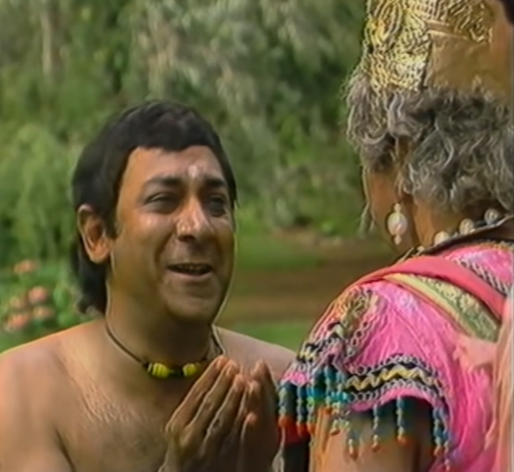
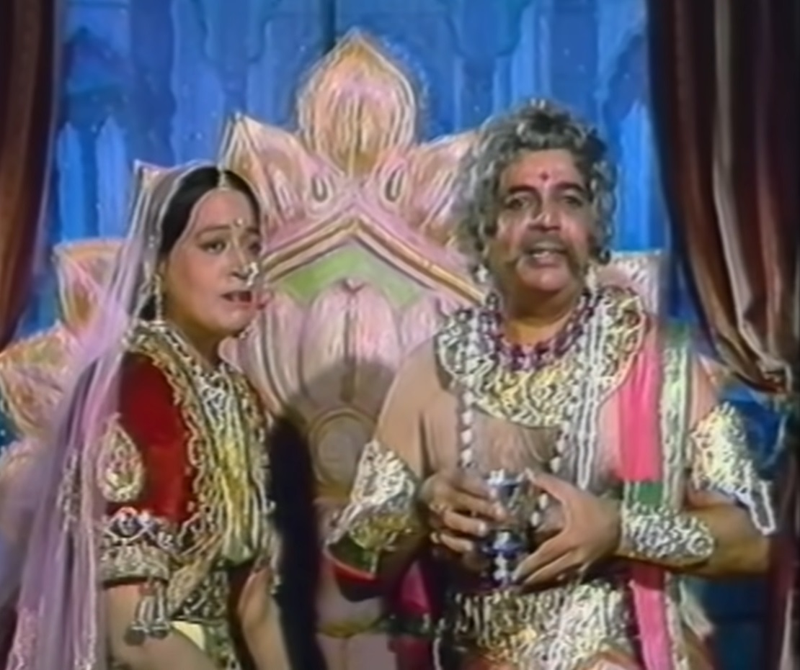
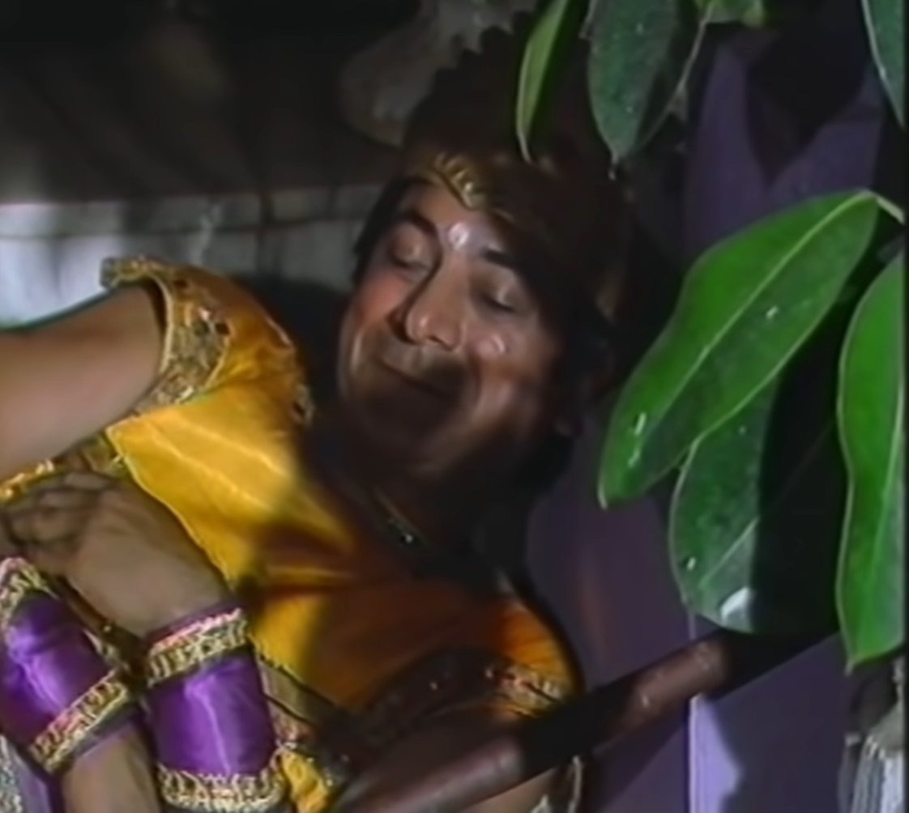

|  |
Vikram catches Betal again and takes him with him and Betal takes him back to a Listens to a new story. There lived an old woman in Chandampur who had a son. It was Dagdu. Dagdu's mother started her career by putting gota border on people's new clothes. The stomach of my son and myself had turned. Dagdu did not do any work all day long Used to dream while eating and sleeping. One day he saw in his dream that A bride and groom are robbed by bandits. Dagdu's mother tells him that Why does he always see such dreams in which bad things happen to everyone? Then a woman from the village comes and asks for her new pair from Dagdu's mother. So Dagdu asks the woman for whom she is making these pairs. The woman tells him that her son is bringing his new daughter-in-law. |
|
Hearing this, Dagdu tells her about his dream, on hearing which the woman She tells him that if this happens, she will beat him up and make him worse. As Dagdu said, the same thing happens, that woman gets Dagdu beaten a lot. After a few days, Dagdu again has another vision in which a man's new The house appears to be burning. Dagdu wakes up after doing the doctor and then a woman comes to Dagdu. When mother came to distribute laddus to celebrate the new house, she got Dagdu. Tells them that their house is going to burn down because he Have seen this happening in my dreams. Hearing this from Dagdu, the woman She gets angry and leaves from there. That woman's house burns down. to dagdu By speaking in black language the villagers made him face and made him sit on the donkey. Removes burns. Dagdu feels sad for speaking the truth and He cries for speaking his truth. the villagers would throw him out of the village Hain Dagdu could not understand why the truth is so bitter. Dagdu When he was wandering in the forest, he would lie down under a tree to rest. and goes to sleep. As soon as he sleeps, he has another dream; in his dream he sees Maharaja. Are seen who are coming to take him under their shelter. then he In reality, the Maharaja's soldiers rise up and Dagdu asks for their help and The king asks that he hire a soldier to guard him at night. Is. The king had to go to Sonpur at night, so he went to sleep early. As soon as it gets dark in the king's room, Dagdu also falls asleep and in his dreams Devastation due to earthquake is visible in Sonpur city. next morning When the king was about to leave for Sonpur, Dagdu warns him That he should not go there because there is going to be an earthquake there. The queen hearing this Stops the king. The next day the king hears from the spy that There has been an earthquake in Sonpur and there has been a lot of destruction, so King Dagdu He calls him and tells him how he came to know that in Sonpur An earthquake is coming. |
 |
|  | Dagdu tells the king that he had seen all this in his dream and Dreams are never wrong. The king rewards him with the hero's necklace and Gets fired from job. After hearing this story, Betal asks King Vikram Why did the king give the share of diamonds to Dagdu and then why did he leave the job? Gave. Vikram answers Betal's question that the king rewarded Dagdu. Gave it because his life was saved because of it and because of his job He was fired because he had left the guard and fallen asleep. Raj realized that Dagdu is not honest in his love for his job, so he is fired. listen to this Kar Betal again flew from Vikram's shoulder and went back to its tree and hung. goes. |